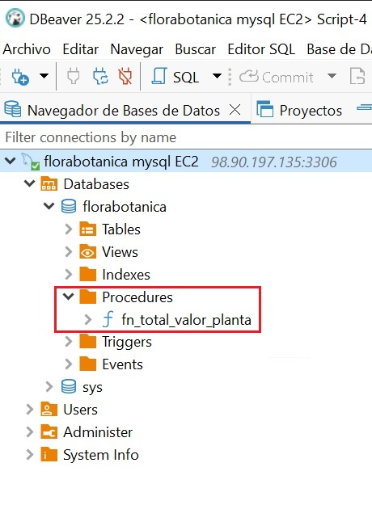

Unidad 2. Acceso a Bases de Datos relacionales¶
Revisiones
| Revisión | Fecha | Descripción |
|---|---|---|
| 1.0 | 05-10-2025 | Adaptación de los materiales a markdown |
| 1.1 | 16-10-2025 | Ampliación de ejemplos y prácticas |
| 1.2 | 21-10-2025 | Inclusión del punto 6 (funciones y procedimientos almacenados) |
| 1.3 | 26-10-2025 | Modificación del Ejemplo 5: commit y rollback |
2.1. Introducción¶
Las bases de datos relacionales son esenciales en el desarrollo de aplicaciones modernas. Su integración con una aplicación requiere realizar una conexión al sistema gestor de base de datos (SGBD) desde el lenguaje de programación. Este tema se centra en cómo realizar esa conexión, cómo trabajar con datos mediante sentencias SQL y cómo aplicar buenas prácticas, como el cierre de recursos, el uso de transacciones y procedimientos almacenados.
Una base de datos relacional es un sistema de almacenamiento de información que organiza los datos en tablas. Cada tabla representa una entidad (por ejemplo, clientes, productos, facturas) y está compuestas por filas y columnas, donde cada fila representa un registro único y cada columna contiene un atributo específico de ese registro. Estas bases de datos (BD) siguen el Modelo Relacional, desarrollado por Edgar F. Codd en la década de 1970, y permite establecer vínculos o relaciones entre diferentes tablas mediante claves primarias y foráneas, facilitando así la integridad, la coherencia y la eficiencia en el manejo de grandes volúmenes de datos.
Ejemplo de tabla clientes:
| id_cliente | nombre | ciudad |
|---|---|---|
| 1 | Pol | Castellón |
| 2 | Eli | Valencia |
La Clave primaria (Primary Key) es una columna (o conjunto de columnas) que identifica de forma única cada fila de una tabla. En el ejemplo: id_cliente es clave primaria en la tabla clientes.
La Clave foránea (Foreign Key) es una columna que hace referencia a una clave primaria de otra tabla para establecer una relación. Por ejemplo, en otra tabla llamada facturas, el campo id_cliente puede ser clave foránea que apunta al campo id_clientes de la tabla clientes.
Ejemplo de tabla facturas:
| id_factura | id_cliente | fecha |
|---|---|---|
| 1 | 1 | 2025-09-18 |
| 2 | 1 | 2025-09-18 |
El lenguaje SQL (Structured Query Language) se utiliza para gestionar bases de datos relacionales ya que gracias a él se pueden crear, modificar, consultar y eliminar datos de forma sencilla y estandarizada. Es lo que se denomina CRUD, es decir, Create (crear), Read (Leer), Update (Actualizar) y Delete (Borrar). Esto lo convierte en la opción preferida para una amplia variedad de aplicaciones empresariales y tecnológicas.
Algunos de sus comandos básicos son:
SELECT: consultar datosINSERT: añadir registrosUPDATE: modificar datos existentesDELETE: eliminar registrosCREATE: definir tablas, claves, relaciones, etc.
Un ejemplo sencillo de consulta podría ser:
SELECT nombre FROM clientes WHERE ciudad = 'Valencia';
Tipos de SGBD relacionales
Conocer qué tipo de gestor de base de datos se está utilizando es esencial para poder conectar correctamente desde una aplicación, ya que cada uno necesita su propio conector o driver. Podemos encontrar:
1. Gestores independientes (cliente-servidor): PostgreSQL, MySQL, Oracle, SQL Server...
- Sistemas robustos y escalables, ideales para entornos multi-usuario y aplicaciones web.
- Requieren un servidor dedicado y una configuración más compleja.
- Casos de uso: aplicaciones web, servicios empresariales, sistemas con alta demanda de acceso concurrente.
2. Gestores embebidos: SQLite, H2, Derby...
- Base de datos ligera, sin servidor, ideal para aplicaciones móviles o de escritorio donde no se requiere gestión centralizada.
- Fácil de configurar y desplegar, ya que la base de datos reside en un archivo local.
- Casos de uso: aplicaciones de escritorio, móviles, prototipos, pruebas unitarias.
Práctica 1: Crea tu base de datos
A partir del fichero de información utilizado en el proyecto de la unidad anterior, crea una base de datos SQLite nombre_de_tu_BD.sqlite con una tabla que contenga la información del fichero. Puedes utilizar DB Browser for SQLite
2.2. Conexión a un SGBD¶
Cuando desarrollamos aplicaciones que trabajan con información persistente, necesitamos acceder a BD para consultar, insertar, modificar o eliminar datos. Existen dos formas principales de hacerlo desde el código:
- Acceso mediante ORM (Object-Relational Mapping).
- Acceso mediante conectores.
Acceso mediante ORM
Un ORM es una herramienta que permite trabajar con la base de datos como si fuera un conjunto de objetos, evitando tener que escribir directamente SQL. El ORM se encarga de mapear las tablas a clases y los registros a objetos, y traduce automáticamente las operaciones del código a consultas SQL. Es ideal para trabajar de forma más productiva en aplicaciones complejas. Sus principales características son:
- Se trabaja con clases en lugar de tablas SQL.
- Ahorra mucho código repetitivo.
- Ideal para proyectos medianos o grandes que requieren mantener muchas entidades.
Algunos ejemplos de ORMs
| ORM / Framework | Lenguaje | Descripción |
|---|---|---|
| Hibernate | Java/Kotlin | El ORM más utilizado con JPA |
| Exposed | Kotlin | ORM ligero y expresivo creado por JetBrains |
| Spring Data JPA | Java/Kotlin | Abstracción que automatiza el acceso a datos |
| Room | Java/Kotlin | ORM oficial para bases de datos SQLite en Android |
JPA (Java Persistence API) es una especificación estándar de Java que define cómo se deben mapear objetos Java (o Kotlin) a tablas de bases de datos relacionales. Es decir, permite gestionar la persistencia de datos de forma orientada a objetos, sin necesidad de escribir SQL directamente. Es el estándar utilizado por las herramientas ORM como Hibernate, EclipseLink, o Spring Data JPA.
Acceso mediante conectores
Un conector (también llamado driver) es una librería software que permite que una aplicación se comunique con un gestor de base de datos (SGBD). Actúa como un puente entre nuestro código y la base de datos, traduciendo las instrucciones SQL a un lenguaje que el gestor puede entender y viceversa. Sin un conector, tu aplicación no podría comunicarse con la base de datos.
Una base de datos puede ser accedida desde diferentes orígenes o herramientas, siempre que tengamos:
- Las credenciales de acceso (usuario y contraseña)
- El host/servidor donde se encuentra la base de datos
- El motor de base de datos (PostgreSQL, MySQL, SQLite, etc.)
- Los puertos habilitados y los permisos correctos
Las principales formas de conectarse a una base de datos son las siguientes:
| Medio de conexión | Descripción |
|---|---|
| Aplicaciones de escritorio | Herramientas gráficas como DBeaver, pgAdmin, MySQL Workbench, DB Browser for SQLite. Permiten explorar, consultar y administrar BD de forma visual. |
| Aplicaciones desarrolladas en código | Programas en Kotlin, Java, Python, C#, etc., mediante conectores como JDBC, psycopg2, ODBC, etc. para acceder a BD desde código. |
| Línea de comandos | Clientes como psql (PostgreSQL), mysql, sqlite3. Permiten ejecutar comandos SQL directamente desde terminal. |
| Aplicaciones web | Sitios web que acceden a BD desde el backend (por ejemplo, en Spring Boot, Node.js, Django, etc.). |
| APIs REST o servidores intermedios | Servicios web que conectan la BD con otras aplicaciones, actuando como puente o capa de seguridad. |
| Aplicaciones móviles | Apps Android/iOS que acceden a BD locales (como SQLite) o remotas (vía Firebase, API REST, etc.). |
| Herramientas de integración de datos | Software como Talend, Pentaho, Apache Nifi para migrar, transformar o sincronizar datos entre sistemas. |
De todas las formas posibles de interactuar con una base de datos, nos vamos a centrar en el uso de conectores JDBC (Java Database Connectivity). Una aplicación (escrita en Kotlin, Java u otro lenguaje) puede leer, insertar o modificar información almacenada en una base de datos relacional si previamente se ha conectado al sitema gestor de base de datos (SGBD). JDBC es una API estándar de Java (y compatible con Kotlin) que permite conectarse a una BD, enviar instrucciones SQL y procesar los resultados manualmente. Es el método de más bajo nivel, pero ofrece un control total sobre lo que ocurre en la BD. Es ideal para aprender los fundamentos del acceso a datos y aprenderlo ayuda a entender mejor lo que hace un ORM por debajo.
Sus principales características son:
- El programador escribe directamente las consultas SQL.
- Requiere gestionar manualmente conexiones, sentencias y resultados.
- Se necesita un driver específico (conector) para cada SGBD:
A continuación se muestra su sintaxis general. Aunque puede variar según el SGBD con el que se trabaje. Por ejemplo en SQLite no se necesita usuario ni contraseña ya que es una base de datos local y embebida:
jdbc:<gestor>://<host>:<puerto>/<nombre_base_datos>
Algunos ejemplos de conectores según el SGBD
| SGBD | Conector (Driver JDBC) | URL de conexión típica |
|---|---|---|
| PostgreSQL | org.postgresql.Driver | jdbc:postgresql://host:puerto/nombreBD |
| MySQL / MariaDB | com.mysql.cj.jdbc.Driver | jdbc:mysql://host:puerto/nombreBD |
| SQLite (embebido) | org.sqlite.JDBC | jdbc:sqlite:nombreBD |
También dependiendo del SGBD será necesario utilizar la dependencia adecuada en Gradle añadiendo las líneas correspondientes en el fichero build.gradle.kts. A continuación se muestran las líneas para los SGBD PostgreSQL, MySQL y SQLite.
dependencies {
implementation("org.postgresql:postgresql:42.7.1") //Postgres
implementation("com.mysql:mysql-connector-j:8.3.0") //MySQL
implementation("org.xerial:sqlite-jdbc:3.43.0.0") //SQLite
}
Hemos visto SQLite es una BD local y por tanto debe de estar dentro del proyecto, la ubicaremos en la carpeta resources ya que esta carpeta forma parte del classpath del proyecto y al compilarlo su contenido se copiará dentro del jar o build final. Así, si se comparte el proyecto, la BD viaja con él.
Ejemplo 1: Conexión a SQLite
El siguiente ejemplo muestra como conectar a una BD SQLite llamada florabotanica.sqlite que se encuentra en la carpeta resources dentro de un proyecto en Kotlin.

import java.io.File
import java.sql.DriverManager
fun main() {
val dbPath = "src/main/resources/florabotanica.sqlite"
println("Ruta de la BD: $dbPath")
val url = "jdbc:sqlite:${dbPath}"
DriverManager.getConnection(url).use { conn ->
println("Conexión establecida correctamente")
}
}
Prueba y analiza el ejemplo 1
- Crea un proyecto kotlin con gradle o utiliza uno que ya tengas.
- Añade las dependencias para trabajar con SQLite.
- Descarga el fichero con la BD de ejemplo desde el siguiente enlace: florabotanica.sqlite
- Copia el fichero en la carpeta correcta del proyecto.
-
Ejecuta el programa y comprueba que la salida por consola es la siguiente:
Ruta de la BD: F:...\src\main\resources\florabotanica.sqlite
Conexión establecida correctamente con SQLite
Práctica 2: Crea tu proyecto Gradle y conecta a tu base de datos
- Crea un nuevo proyecto en Kotlin con Gradle.
- Añade las dependencias para trabajar con SQLite.
- Copia la BD creada en la práctica anterior en la carpeta
resources. Tu proyecto debe tener los mismos archivos que en la imagen del ejemplo anterior. - Añade las líneas de código necesarias para conectar con tu BD y muestra un mensaje indicando si se ha establecido la conexión correctamente o no.
2.3. Operaciones sobre la BD¶
En JDBC (Java Database Connectivity), las operaciones sobre la base de datos se realizan utilizando los siguientes objetos y métodos:
-
Connection, establece el canal de comunicación con el SGBD (PostgreSQL, MySQL, etc.)
-
Los objetos PreparedStatement y CreateStatement se utlizan para enviar consultas SQL desde el programa a la base de datos. A continuación se muestra una tabla con el uso de cada uno:
| Si necesitas... | Usa... |
|---|---|
| Consultas sin parámetros | CreateStatement |
| Consultas con datos del usuario | PreparedStatement |
| Seguridad frente a inyecciones SQL | PreparedStatement |
| Ejecutar muchas veces con distintos valores | PreparedStatement |
| Crear tablas o sentencias SQL complejas que no cambian | CreateStatement |
- Los métodos executeQuery(), executeUpdate() y execute() se utilizan para ejecutar sentencias SQL, pero se usan en contextos diferentes. A continuación se muestra una tabla con el uso de cada uno:
| Método | Uso principal | Tipo de sentencia SQL | Resultado que devuelve |
|---|---|---|---|
| executeQuery() | Realizar consultas | SELECT | Objeto ResultSet con el resultado de la consulta SQL. Permite recorrer fila a fila el conjunto de resultados, accediendo a cada campo por nombre o por posición |
| executeUpdate() | Realizar modificaciones | INSERT, UPDATE, DELETE, DDL (CREATE, DROP, etc.) | Entero con el número de filas afectadas |
| execute() | No se sabe de antemano qué tipo de sentencia SQL se va a ejecutar (consulta o modificación) | Sentencias SQL que pueden devolver varios resultados | Booleano true si el resultado es un ResultSet (SELECT) y false si el resultado es un entero (INSERT, UPDATE, DELETE,CREATE, ALTER) |
Liberación de recursos
Cuando una aplicación accede a una base de datos, abre varios recursos internos que consumen memoria y conexiones activas en el sistema:
- La conexión con el servidor de base de datos (Connection).
- Las sentencias SQL preparadas (Statement o PreparedStatement).
- El resultado de la consulta (ResultSet).
Estos recursos no se liberan automáticamente cuando se termina su uso (especialmente en Java o Kotlin con JDBC). Si no se cierran correctamente, se pueden producir problemas como:
- Fugas de memoria.
- Bloqueo de conexiones (demasiadas conexiones abiertas).
- Degradación del rendimiento.
- Errores inesperados en la aplicación.
Para liberar estos recursos hay dos opciones:
1. Usar try–catch–finally manual
Cuándo:
-
No estás en Kotlin o no puedes usar .use.
-
Necesitas capturar y manejar excepciones dentro del mismo método.
-
Necesitas lógica extra antes o después de cerrar el recurso (por ejemplo, reintentos, logging detallado, liberar múltiples recursos en un orden específico).
-
Estás trabajando en un proyecto que sigue un estilo más clásico de Java.
2. Utilización de .use { ... }
Es la que utilizaremos en nuestros proyectos.
Se recomienda utilizarlo si:
-
Estás trabajando con un recurso que implementa AutoCloseable (Connection, Statement, ResultSet, File, etc.).
-
Solo necesitas abrir, usar y cerrar el recurso de forma automática.
-
No necesitas lógica compleja de manejo de excepciones dentro del mismo bloque.
Ventajas:
-
Código más limpio y legible.
-
Cierra automáticamente el recurso aunque ocurra una excepción.
-
Evita errores de olvidar close().
Ejemplo 2: Utilización de close()
A continuación tienes un ejemplo en el que se declara una constante con la ruta a la BD, se establece la conexión, se consultan datos y se cierran los recursos abiertos (ResultSet, Statement y Connection) utilizando close() dentro de un bloque finally para garantizar su cierre incluso si ocurre un error. El orden correcto de cierre es del más interno al más externo:
import java.sql.Connection
import java.sql.Statement
import java.sql.ResultSet
import java.sql.DriverManager
import java.sql.SQLException
// Ruta al archivo de base de datos SQLite
const val URL_BD = "jdbc:sqlite:src/main/resources/florabotanica.sqlite"
fun main() {
var conn: Connection? = null
var stmt: Statement? = null
var rs: ResultSet? = null
try {
conn = DriverManager.getConnection(URL_BD)
println("Conectado a la BD")
stmt = conn.createStatement()
rs = stmt.executeQuery("SELECT * FROM plantas")
while (rs.next()) {
println(rs.getString("nombre_comun"))
}
} catch (e: SQLException) {
println("Error al conectar o consultar la base de datos: ${e.message}")
} catch (e: Exception) {
e.printStackTrace()
} finally {
try {
rs?.close()
stmt?.close()
conn?.close()
println("Conexión cerrada correctamente")
} catch (e: Exception) {
println("Error al cerrar los recursos: ${e.message}")
}
}
}
Prueba y analiza el ejemplo 2
Prueba el código de ejemplo y verifica que funciona correctamente.
Ejemplo 3: Utilización de .use
A continuación se muestra un ejemplo con .use (sin necesidad de cerrar recursos manualmente) que realiza la misma consulta que el ejemplo anterior. Ahora los recursos abiertos de cerrarán automáticamente. Además, por organización del código, se ha declarado una función para conectar a la BD:
-
conn.use { ... } cierra la conexión automáticamente al final del bloque.
-
stmt.use { ... } cierra el Statement automáticamente.
-
ResultSet se cierra cuando cierras el Statement.
import java.sql.Connection
import java.sql.DriverManager
import java.sql.SQLException
// Ruta al archivo de base de datos SQLite
const val URL_BD = "jdbc:sqlite:src/main/resources/florabotanica.sqlite"
// Obtener conexión
fun conectarBD(): Connection? {
return try {
DriverManager.getConnection(URL_BD)
} catch (e: SQLException) {
e.printStackTrace()
null
}
}
fun main() {
conectarBD()?.use { conn ->
println("Conectado a la BD")
conn.createStatement().use { stmt ->
stmt.executeQuery("SELECT * FROM plantas").use { rs ->
while (rs.next()) {
println(rs.getString("nombre_comun"))
}
}
}
} ?: println("No se pudo conectar")
}
Prueba y analiza el ejemplo 3
Prueba el código de ejemplo y verifica que funciona correctamente.
Práctica 3: Mejora tu proyecto
- Declara una constante con la ruta a la BD.
- Declara una función para conectar a la BD.
- En el main conecta con la BD y realiza una consulta sobre tus datos utilizando .use (para no tener que cerrar recursos manualmente).
2.4. Objetos de acceso a datos (DAO)¶
Los objetos de acceso a datos son una buena forma de organizar nuestro código para manejar las diferentes operaciones CRUD de acceso a los datos. Es el Data Access Object (DAO) y algunas de las ventajas de utilizar estos objetos son las siguientes:
- Organización: todo el código SQL está en un único lugar.
- Reutilización: puedes llamar a PlantasDAO.listarPlantas() desde distintos sitios sin repetir la consulta.
- Mantenibilidad: si cambia la base de datos, solo tocas el DAO.
- Claridad: el resto de tu app se lee mucho más limpio, sin SQL mezclado.
Ejemplo 4: DAO
El siguiente ejemplo es el DAO para la tabla plantas de la BD florabotanica.sqlite. La estructura de la tabla plantas es la siguiente:

Creamos un archivo PlantasDAO.kt en el que declararemos una data class con la misma estructura que la tabla plantas y las funciones para leer la información de la tabla, añadir registros nuevos, modificar la información existente y borrarla. El código fuente es:
data class Planta(
val id_planta: Int? = null, // lo genera SQLite automáticamente
val nombreComun: String,
val nombreCientifico: String,
val stock: Int,
val precio: Double
)
object PlantasDAO {
fun listarPlantas(): List<Planta> {
val lista = mutableListOf<Planta>()
conectarBD()?.use { conn ->
conn.createStatement().use { stmt ->
stmt.executeQuery("SELECT * FROM plantas").use { rs ->
while (rs.next()) {
lista.add(
Planta(
id_planta = rs.getInt("id_planta"),
nombreComun = rs.getString("nombre_comun"),
nombreCientifico = rs.getString("nombre_cientifico"),
stock = rs.getInt("stock"),
precio = rs.getDouble("precio")
)
)
}
}
}
} ?: println("No se pudo establecer la conexión.")
return lista
}
// Consultar planta por ID
fun consultarPlantaPorId(id: Int): Planta? {
var planta: Planta? = null
conectarBD()?.use { conn ->
conn.prepareStatement("SELECT * FROM plantas WHERE id_planta = ?").use { pstmt ->
pstmt.setInt(1, id)
pstmt.executeQuery().use { rs ->
if (rs.next()) {
planta = Planta(
id_planta = rs.getInt("id_planta"),
nombreComun = rs.getString("nombre_comun"),
nombreCientifico = rs.getString("nombre_cientifico"),
stock = rs.getInt("stock"),
precio = rs.getDouble("precio")
)
}
}
}
} ?: println("No se pudo establecer la conexión.")
return planta
}
fun insertarPlanta(planta: Planta) {
conectarBD()?.use { conn ->
conn.prepareStatement(
"INSERT INTO plantas(nombre_comun, nombre_cientifico, stock, precio) VALUES (?, ?, ?, ?)"
).use { pstmt ->
pstmt.setString(1, planta.nombreComun)
pstmt.setString(2, planta.nombreCientifico)
pstmt.setInt(3, planta.stock)
pstmt.setDouble(4, planta.precio)
pstmt.executeUpdate()
println("Planta '${planta.nombreComun}' insertada con éxito.")
}
} ?: println("No se pudo establecer la conexión.")
}
fun actualizarPlanta(planta: Planta) {
if (planta.id_planta == null) {
println("No se puede actualizar una planta sin id.")
return
}
conectarBD()?.use { conn ->
conn.prepareStatement(
"UPDATE plantas SET nombre_comun = ?, nombre_cientifico = ?, stock = ?, precio = ? WHERE id_planta = ?"
).use { pstmt ->
pstmt.setString(1, planta.nombreComun)
pstmt.setString(2, planta.nombreCientifico)
pstmt.setInt(3, planta.stock)
pstmt.setDouble(4, planta.precio)
pstmt.setInt(5, planta.id_planta)
val filas = pstmt.executeUpdate()
if (filas > 0) {
println("Planta con id=${planta.id_planta} actualizada con éxito.")
} else {
println("No se encontró ninguna planta con id=${planta.id_planta}.")
}
}
} ?: println("No se pudo establecer la conexión.")
}
fun eliminarPlanta(id: Int) {
conectarBD()?.use { conn ->
conn.prepareStatement("DELETE FROM plantas WHERE id_planta = ?").use { pstmt ->
pstmt.setInt(1, id)
val filas = pstmt.executeUpdate()
if (filas > 0) {
println("Planta con id=$id eliminada correctamente.")
} else {
println("No se encontró ninguna planta con id=$id.")
}
}
} ?: println("No se pudo establecer la conexión.")
}
}
La llamada a estas funciones desde main.kt podría ser:
fun main() {
// Listar todas las plantas
println("Lista de plantas:")
PlantasDAO.listarPlantas().forEach {
println(" - [${it.id_planta}] ${it.nombreComun} (${it.nombreCientifico}), stock ${it.stock} unidades, precio: ${it.precio} €")
}
// Consultar planta por ID
val planta = PlantasDAO.consultarPlantaPorId(3)
if (planta != null) {
println("Planta encontrada: [${planta.id_planta}] ${planta.nombreComun} (${planta.nombreCientifico}), stock ${planta.stock} unidades, precio: ${planta.precio} €")
} else {
println("No se encontró ninguna planta con ese ID.")
}
// Insertar plantas
PlantasDAO.insertarPlanta(
Planta(
nombreComun = "Palmera",
nombreCientifico = "Arecaceae",
stock = 2,
precio = 50.5
)
)
// Actualizar planta con id=1
PlantasDAO.actualizarPlanta(
Planta(
id_planta = 1,
nombreComun = "Aloe Arborescens",
nombreCientifico = "Aloe barbadensis miller",
stock = 20,
precio = 5.8
)
)
// Eliminar planta con id=2
PlantasDAO.eliminarPlanta(2)
}
Prueba y analiza el ejemplo 4
Prueba el código de ejemplo y verifica que funciona correctamente.
Práctica 4: Trabaja con tu base de datos
- Añade a tu proyecto un objetos de acceso a datos (DAO) para manejar las diferentes operaciones CRUD de la primera tabla de tu BD.
- Utiliza .use en todas tus operaciones para asegurarte de que se cierran correctamente todos los recursos.
- Añade a tu proyecto un menú en tu función main para llamar a todas las operaciones CRUD que acabas de crear (pide la información por consola para las funciones que requieran el paso de información como parámetro) y comprueba que todas funcionan correctamente.
- Añade otras dos tablas a tu BD y sus correspondientes DAO a tu proyecto.
- Amplía el menú para poder gestionar los datos de todas las tablas.
2.5. Transacciones y excepciones¶
Transacciones
Una transacción es una secuencia de una o más operaciones sobre una base de datos que deben ejecutarse como una unidad indivisible. El objetivo es asegurar que todas las operaciones se completen con éxito o, en caso de fallo, ninguna de ellas se aplique, manteniendo así la base de datos en un estado consistente. Por ejemplo, en una transferencia bancaria, si falla el abono en una cuenta, se cancela el débito en la otra.
Las transacciones se gestionan mediante comandos como BEGIN TRANSACTION (para iniciar), COMMIT (para confirmar los cambios) y ROLLBACK (para deshacer los cambios en caso de error). Este mecanismo protege la base de datos frente a fallos parciales y situaciones de concurrencia, asegurando que los datos siempre reflejen una realidad válida y coherente.
Propiedades de una transacción (ACID)
Las transacciones garantizan propiedades fundamentales, conocidas por el acrónimo ACID:
| Propiedad | Significado breve |
|---|---|
| Atomicidad | Todas las operaciones se ejecutan o ninguna lo hace |
| Consistencia | El sistema pasa de un estado válido a otro |
| Isolación | No interfiere con otras transacciones simultáneas |
| Durabilidad | Una vez confirmada, el cambio permanece |
Comandos clave
Para controlar correctamente una transacción desde el código, necesitamos usar tres comandos clave:
- commit(): Confirma los cambios realizados por la transacción, haciéndolos permanentes.
- rollback(): Revierte todos los cambios realizados durante la transacción actual, volviendo al estado anterior.
Por defecto, muchas conexiones JDBC están en modo auto-commit, es decir, cada operación se ejecuta y confirma automáticamente. Para usar transacciones de forma manual, debes desactivar este modo:
conexion.autoCommit = false
Excepciones
El manejo de excepciones en las transacciones es absolutamente necesario para garantizar que los datos de la base de datos no queden en un estado inconsistente o corrupto cuando ocurre un error durante una operación.
Una transacción sin control de errores no es una transacción segura. Siempre hay que estar preparado para deshacer todo si algo sale mal.
Cuando realizamos varias operaciones dentro de una misma transacción (por ejemplo, una transferencia bancaria), pueden ocurrir errores como:
- un fallo de conexión,
- un ID incorrecto,
- un valor nulo inesperado,
- un error lógico como saldo insuficiente.
Si no controlamos esos errores, la base de datos podría:
- Aplicar solo algunas de las operaciones
- Dejar datos parcialmente modificados
- Generar resultados incorrectos para otros usuarios
Para evitarlo se utiliza un bloque try-catch que:
- Llama a commit() si todo sale bien
- Llama a rollback() si ocurre cualquier excepción
try {
conexion.autoCommit = false
// Varias operaciones SQL...
conexion.commit() // Todo bien
} catch (e: Exception) {
conexion.rollback() // Algo falló → revertir
println("Error en la transacción. Cambios anulados.")
}
Ejemplo 5: commit y rollback
Para el siguiente ejemplo se han añadido a la BD las tablas jardinesy jardines_plantas cuya estructura es la siguiente:


Supongamos que queremos llevar varias unidades de una planta a un jardín. El programa debe actualizar el stock en la tabla plantas (restando las unidades correspondientes) y añadir un registro en la tabla jardines_plantas indicando el jadín, la planta y la cantidad. Ambas operaciones deben realizarse juntas, o no realizarse ninguna. El código sería el siguiente:
fun llevarPlantasAJardin(id_jardin: Int, id_planta: Int, cantidad: Int) {
conectarBD()?.use { conn ->
try {
conn.autoCommit = false // Iniciar transacción manual
// Restar stock a la planta
conn.prepareStatement("UPDATE plantas SET stock = stock - $cantidad WHERE id_planta = ?").use { stock ->
stock.setInt(1, id_planta)
stock.executeUpdate()
}
// Añadir línea en tabla jardines_plantas
conn.prepareStatement("INSERT INTO jardines_plantas(id_jardin, id_planta, cantidad) VALUES (?, ?, ?)").use { plantar ->
plantar.setInt(1, id_jardin)
plantar.setInt(2, id_planta)
plantar.setInt(3, cantidad)
plantar.executeUpdate()
}
// Confirmar cambios
conn.commit()
println("Transacción realizada con éxito.")
} catch (e: SQLException) {
if (e.message?.contains("UNIQUE constraint failed") == true) {
println("Intento de insertar clave duplicada")
conn.rollback()
println("Transacción revertida.")
} else {
throw e // otros errores, relanzamos
}
} finally {
// Código que se ejecuta siempre
println("Fin del programa.")
}
}
}
Si no se produce ningún error se hará el commit y en caso contrario el rollback
Prueba y analiza el ejemplo 5
Prueba el código de ejemplo y verifica que funciona correctamente.
Práctica 5: Amplía tu proyecto
Incluye transacciones y control de errores mediante la captura de excepciones.
Entrega 1
Entrega en Aules la carpeta main de tu proyecto comprimida en formato .zip
IMPORTANTE: El proyecto no debe contener código que no se utilice, ni restos de pruebas de los ejemplos y no debe estar separado por prácticas. Debe ser un proyecto totalmente funcional.
2.6. Funciones y procedimientos almacenados¶
Las funciones (FUNCTION) y los procedimientos (PROCEDURE) no se crean desde el lenguaje Kotlin, ya que son elementos propios del SGBD. Para definirlos, se utiliza SQL y se ejecutan directamente sobre la base de datos a través de un cliente SQL.
Tanto las funciones como los procedimientos almacenados son bloques de código que se guardan en el servidor de la base de datos y que encapsulan una serie de instrucciones SQL.
Se usan para:
- Reutilizar operaciones complejas
- Organizar mejor la lógica de negocio
- Mejorar el rendimiento (menos tráfico entre app y BD)
- Mantener la integridad de datos
| Concepto | Función | Procedimiento |
|---|---|---|
| Devuelve | Un valor simple | Un conjunto de datos o varios valores |
| Llamada SQL | SELECT fn_total_valor_planta(3) |
CALL sp_listar_plantas_por_jardin(1) |
| Llamada en Kotlin | SELECT fn... con PreparedStatement |
CALL sp... con CallableStatement |
| Uso típico | Cálculos | Listados, inserciones, actualizaciones |
SQLite no soporta funciones ni procedimientos almacenados como lo hacen otros SGBD, por eso a partir de aquí seguiremos trabajando en MySQL.
Práctica 6: Servidor MySQL
- Monta tu servidor virtual siguiendo los pasos del documento AWS Learner Lab e instala en él tu servidor MySQL siguiendo los pasos del documento Instalación MySQL en EC2
- Replica tu base de datos
SQLiteenMySQLdentro del servidor que acabas de crear. Puedes utilizar la herramienta DBeaver para crear las tablas e insertar los registros en ellas. - Haz una copia de tu proyecto y elimina todo lo relacionado con SQLite (incluido el archivo .sqlite).
- Añade las líneas necesarias para conectar a tu BD MySQL.
- Comprueba que la aplicación se está conectando a MySQL correctamente y que todas las opciones del menú siguen funcionando.
Funciones
Una función está diseñada para calcular y devolver un resultado. Se puede usar directamente dentro de una consulta SQL como parte de un SELECT, WHERE, ORDER BY, etc. Las funciones siempre devuelven un valor. La sintaxis general para crear una función en MySQL es la siguiente:
DELIMITER //
CREATE FUNCTION nombre_funcion(parámetro1 tipo, parámetro2 tipo, ...)
RETURNS tipo_dato
[DETERMINISTIC | NOT DETERMINISTIC]
[READS SQL DATA | MODIFIES SQL DATA | NO SQL]
BEGIN
-- Declaraciones opcionales
DECLARE variable_local tipo;
-- Lógica de la función
SET variable_local = ...;
-- Retornar un valor
RETURN variable_local;
END
//
DELIMITER ;
| Parte | Significado |
|---|---|
DELIMITER // |
Cambia el delimitador temporalmente (porque dentro de la función usas ;). |
CREATE FUNCTION nombre_funcion |
Define la función y su nombre. |
RETURNS tipo_dato |
Especifica el tipo de valor que devolverá (INT, DOUBLE, VARCHAR(n), etc.). |
DETERMINISTIC |
Indica que siempre devuelve el mismo resultado para los mismos parámetros. Esto permite que el optimizador de MySQL y los motores de replicación cacheen resultados o eviten reevaluaciones innecesarias. |
NO DETERMINISTIC |
Indica que el resultado puede variar aunque los argumentos sean iguales, por ejemplo si se usan funciones como RAND(), NOW(), etc. |
BEGIN ... END |
Marca el bloque de instrucciones. |
DECLARE |
Declara variables locales (opcional). |
RETURN |
Devuelve un único valor. |
DELIMITER ; |
Restablece el delimitador habitual. |
Ejemplo 6: Trabajar con funciones
El siguiente ejemplo crea una función que devuelve el valor total del stock de una planta (stock × precio).
DELIMITER //
DROP FUNCTION IF EXISTS fn_total_valor_planta;
//
CREATE FUNCTION fn_total_valor_planta(p_id_planta INT)
RETURNS DOUBLE
DETERMINISTIC
BEGIN
DECLARE total DOUBLE;
SET total = (
SELECT stock * precio
FROM plantas
WHERE id_planta = p_id_planta);
RETURN total;
END;
//
DELIMITER ;
Para que la función se guarde en la BD hay que ejecutar el código anterior como un script SQL. El resultado será el siguiente:

Una vez guardada, la podemos llamar desde dentro de la propia BD ejecutando el script SQL:
SELECT fn_total_valor_planta(3);
En este caso el resultado de la ejecución es el que se muestra en la siguiente imagen:

Una vez que las funciones están creados en la base de datos, se pueden utilizar perfectamente desde Kotlin a través de JDBC, igual que se hace con cualquier consulta SQL y se gestionan mediante objetos PreparedStatement. Las funciones se invocan con SELECT nombre_funcion(...). A continuación se muestra el código necesario para realizar la llamada desde Kotlin:
fun llamar_fn_total_valor_planta(id: Int){
conectarBD()?.use { conn ->
val sql = "SELECT fn_total_valor_planta(?)"
conn.prepareStatement(sql).use { stmt ->
stmt.setInt(1, id)
stmt.executeQuery().use { rs ->
if (rs.next()) {
val resultado = rs.getInt(1)
println("El valor es: $resultado")
}
}
}
}
}
Prueba y analiza el ejemplo 6
Prueba el código de ejemplo y verifica que funciona correctamente.
Práctica 7: Añade funciones a tu proyecto
- Crea al menos dos funciones en tu base de datos y comprueba que se ejecutan correctamente desde dentro de ella.
- Amplia el menú de tu proyecto y añade el código necesario para llamar a las funciones de tu BD.
Procedimientos
Un procedimiento sirve para ejecutar acciones dentro de la base de datos, como insertar registros, modificar datos o gestionar operaciones en bloque. La sintaxis general para crear un procedimiento en MySQL es la siguiente:
DELIMITER //
CREATE PROCEDURE nombre_procedimiento(
[IN | OUT | INOUT] parametro1 tipo,
[IN | OUT | INOUT] parametro2 tipo,
...
)
BEGIN
-- Declaraciones opcionales
DECLARE variable_local tipo;
-- Lógica del procedimiento
SELECT ...;
UPDATE ...;
-- etc.
END
//
DELIMITER ;
| Parte | Descripción |
|---|---|
DELIMITER // |
Cambia el delimitador temporal para poder usar ; dentro del cuerpo. |
CREATE PROCEDURE nombre |
Declara el procedimiento. |
IN, OUT, INOUT |
Especifica la dirección del parámetro: |
IN → se pasa al procedimiento (solo lectura). |
|
OUT → se devuelve como salida. |
|
INOUT → se pasa y puede ser modificado. |
|
BEGIN ... END |
Define el bloque de instrucciones. |
DECLARE |
Declara variables locales si las necesitas. |
DELIMITER ; |
Restablece el delimitador normal. |
Ejemplo 7: Trabajar con procedimientos
El siguiente ejemplo crea un procedimiento que devuelve un listado con las plantas y cantidades que hay en un jardín determinado.
DELIMITER //
DROP PROCEDURE IF EXISTS sp_listar_plantas_por_jardin;
//
CREATE PROCEDURE sp_listar_plantas_por_jardin(IN p_id_jardin INT)
BEGIN
SELECT j.nombre AS jardin,
p.nombre_comun AS planta,
jp.cantidad
FROM jardines_plantas jp
JOIN jardines j ON jp.id_jardin = j.id_jardin
JOIN plantas p ON jp.id_planta = p.id_planta
WHERE j.id_jardin = p_id_jardin;
END;
//
DELIMITER ;
Al igual que en las funciones, para que un procedimiento se guarde en la BD hay que ejecutar el código anterior como un script SQL. El resultado será el siguiente:

Una vez guardado, lo podemos llamar desde dentro de la propia BD ejecutando el script SQL siguiente:
CALL sp_listar_plantas_por_jardin(1);
En este caso el resultado de la ejecución es el que se muestra en la siguiente imagen:

Una vez que los procedimientos están creados en la base de datos, se pueden utilizar perfectamente desde Kotlin a través de JDBC, igual que se hace con cualquier consulta SQL y se gestionan mediante objetos CallableStatement. Los procedimientos se llaman con CALL nombre_procedimiento(...). A continuación se muestra el código necesario para realizar la llamada desde Kotlin:
fun llamar_sp_listar_plantas_por_jardin(id: Int){
conectarBD()?.use { conn ->
val sqlProcedimiento = "{CALL sp_listar_plantas_por_jardin(?)}"
conn.prepareCall(sqlProcedimiento).use { call ->
call.setInt(1, 1) // id_jardin = 1
call.executeQuery().use { rs ->
println("\n Plantas del jardín :$id")
while (rs.next()) {
val planta = rs.getString("planta")
val cantidad = rs.getInt("cantidad")
println(" - $planta (Cantidad: $cantidad)")
}
}
}
}
}
Prueba y analiza el ejemplo 7
Prueba el código de ejemplo y verifica que funciona correctamente.
Ejemplo 8: Otro ejemplo de procedimientos
El siguiente ejemplo crea un procedimiento que inserta una planta en un jardín (en la tabla jardines_plantas). El procedimiento recibe el id_jardin, el id_planta y una cantidad. Si la relación ya existe, actualizará la cantidad (sumando) y si no existe, insertará una nueva fila.
DELIMITER //
DROP PROCEDURE IF EXISTS sp_agregar_planta_a_jardin;
//
CREATE PROCEDURE sp_agregar_planta_a_jardin(
IN p_id_jardin INT,
IN p_id_planta INT,
IN p_cantidad INT
)
BEGIN
-- Verificar si la relación jardín-planta ya existe
IF EXISTS (
SELECT 1 FROM jardines_plantas
WHERE id_jardin = p_id_jardin AND id_planta = p_id_planta
) THEN
-- Si existe, actualiza la cantidad
UPDATE jardines_plantas
SET cantidad = cantidad + p_cantidad
WHERE id_jardin = p_id_jardin AND id_planta = p_id_planta;
SELECT CONCAT('Cantidad actualizada. Nueva cantidad: ', cantidad)
AS mensaje
FROM jardines_plantas
WHERE id_jardin = p_id_jardin AND id_planta = p_id_planta;
ELSE
-- Si no existe, inserta una nueva relación
INSERT INTO jardines_plantas (id_jardin, id_planta, cantidad)
VALUES (p_id_jardin, p_id_planta, p_cantidad);
SELECT 'Nueva planta agregada al jardín.' AS mensaje;
END IF;
END;
//
DELIMITER ;
Después de ejecutar el script anterior ya tenemos el procedimiento almacenado en nustra BD:
Ejecutamos el script SQL dentro de la misma BD
-- Insertar una nueva planta en el jardín 2
CALL sp_agregar_planta_a_jardin(2, 5, 4);
-- Insertar más cantidad de una planta que ya existe
CALL sp_agregar_planta_a_jardin(2, 5, 3);
-- Verificar resultado
SELECT * FROM jardines_plantas WHERE id_jardin = 2 AND id_planta = 5;
El resultado de la ejecución es el que se muestra en la siguiente imagen:
A continuación se muestra el código necesario para realizar la llamada desde Kotlin:
fun llamar_sp_agregar_planta_a_jardin(id_p:Int, id_j:Int, cant:Int){
conectarBD()?.use { conn ->
val sql = "{CALL sp_agregar_planta_a_jardin(?, ?, ?)}"
conn.prepareCall(sql).use { call ->
call.setInt(1, id_p) // id_jardin
call.setInt(2, id_j) // id_planta
call.setInt(3, cant) // cantidad
call.executeQuery().use { rs ->
while (rs.next()) {
println(rs.getString("mensaje"))
}
}
}
}
}
Prueba y analiza el ejemplo 8
Prueba el código de ejemplo y verifica que funciona correctamente.
Práctica 8: Añade procedimientos a tu proyecto
- Crea al menos dos procedimientos, uno que devuelva información resultante de realizar una consulta entre todas las tablas que hay en tu BD y otro que inserte información de una de las tablas.
- Amplia el menú de tu proyecto y añade el código necesario para llamar a los procedimientos de tu BD.
Entrega 2
Realiza lo siguiente:
- Exporta tu BD con el comando
mysqldumpen formato .sql (Puedes consultar el documento Instalación de MySQL en EC2 apartadoExportación de la BD). - Copia el archivo
.sqla la carpetaresourcesde tu proyecto.
Entrega en Aules la carpeta main de tu proyecto comprimida en formato .zip
IMPORTANTE: El proyecto no debe contener código que no se utilice, ni restos de pruebas de los ejemplos y no debe estar separado por prácticas. Debe ser un proyecto totalmente funcional.
Autoría
Obra realizada por Begoña Paterna Lluch basada en materiales desarrollados por Alicia Salvador Contreras. Publicada bajo licencia Creative Commons Atribución/Reconocimiento-CompartirIgual 4.0 Internacional